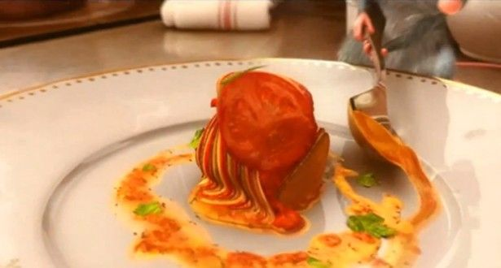

Ratatouille

Okay I am not going to lie, when I was a kid I always thought this dish looked really good and it was like a bunch of pepperoni slices stuck together by a sauce. Well I was wrong about the pepperoni thing. This is actually a vegetarian dish. Check it out!
Ingredients
- 1 can of tomato paste
- 1/2 onion, chopped
- 1/4 cup of minced garlic
- 3/4 cup of water
- 4 tablespoons olive oil
- Salt and Pepper
- 1 eggplant, trimmed and thinly sliced
- 1 zuchchini, trimmed and thinly sliced
- 1 yellow squash, trimmed and thinly sliced
- 1 red bell pepper, trimmed and thinly sliced
- 1 yellow bell pepper, trimmed and thinly sliced
- 1 teaspoon fresh thyme leaves
- 3 tablespoons mascarpone cheese
Directions
- Preheat oven to 375 degrees F
- Spread tomato paste onto the bottom of a square baking dish. Sprinkle with onion and garlic. Stir in water and 1 tbsp of olive oil. Season with salt and pepper.
- Arrange alternating slices of eggplant, zucchini, yellow squash, red bell pepper, and yellow bell pepper. Overlap sliced to display the differences in color.
- Drizzle vegestables with remaining 3 tbsp olive oil, season with salt, pepper, and thyme. Cover baking dish with parchment paper.
- Bake for 45 minutes. Serve with mascarpone cheese. And enjoy this pixar take on a classic French dish!
Home